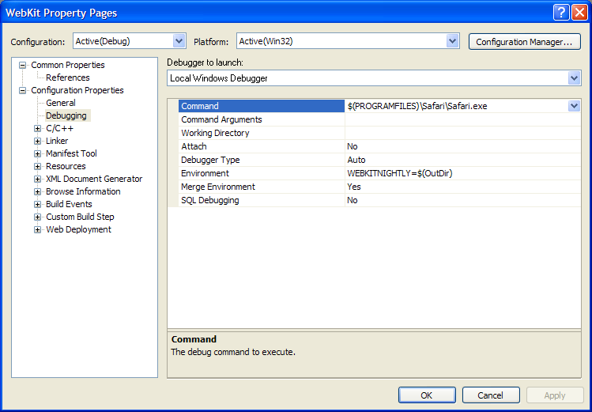
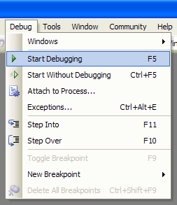

Debugging on Windows
Open
WebKit/WebKit/win/WebKit.vcproj/WebKit.slnYou can open it in either Visual Studio 2005, or Visual C++ Express 2005. If you get errors about not being able to find
.vspropsfiles, run update-webkit, then close and relaunch Cygwin and Visual Studio or Visual C++ Express.Set WebKit.vcproj as the solution's StartUp project
Select the WebKit project in the Solution Explorer, then choose Project > Set as StartUp Project. This will cause the project to turn bold in the Solution Explorer.

Set WebKit.vcproj's Debugging properties
With the WebKit project selected, choose Project > Properties, then navigate to Configuration Properties > Debugging. Set the following options:
- Command
$(PROGRAMFILES)\Safari\Safari.exe- Environment
WEBKITNIGHTLY=$(OutDir)
Then click
OKto close the properties dialog.Launch the debugger
Choose Debug > Start Debugging.

It is also recommended that you follow the instructions to configure Visual Studio to use Apple's Safari for Windows symbol server. This will give Visual Studio the information it needs to provide reliable backtraces when pausing in the debugger or when a crash occurs.